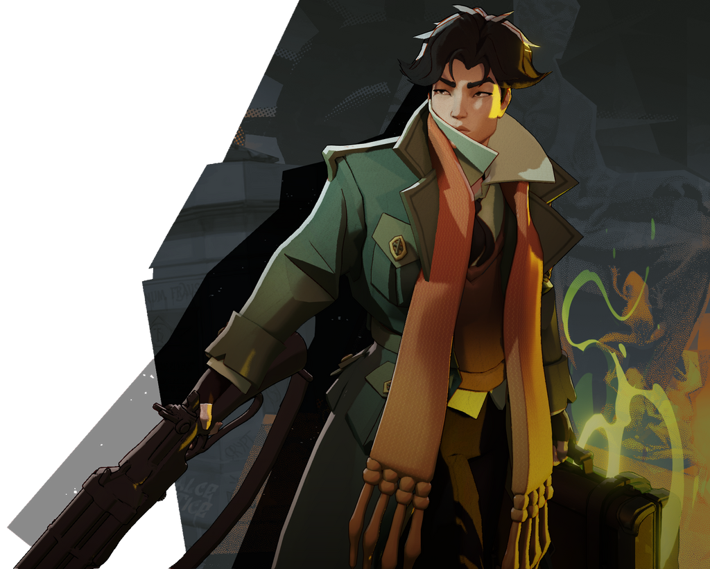
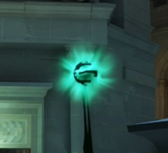
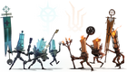
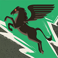
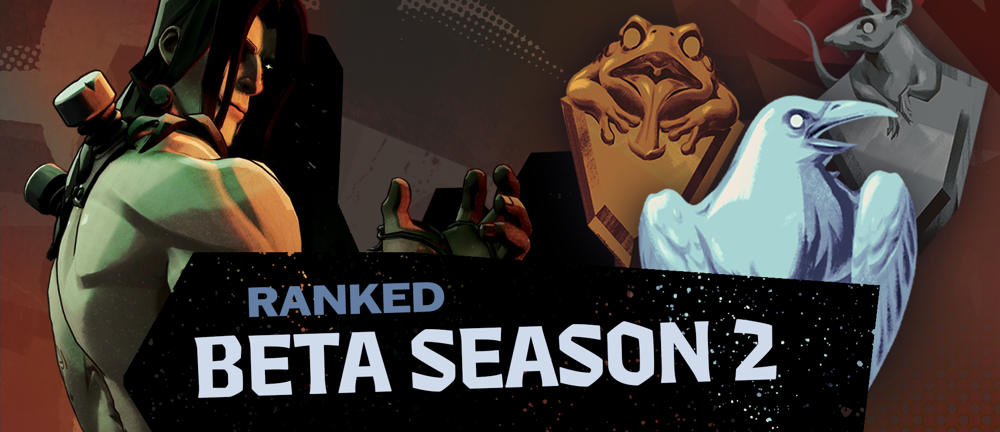
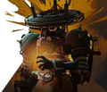

Con su maletín explosivo y su capacidad de teletransporte instantáneo, Pocket se ha consolidado como uno de los personajes más letales y escurridizos del meta actual. Descubre cómo combinar sus habilidades para flanquear líneas, descolocar al equipo rival y escapar de situaciones críticas con ventaja táctica
Leer más
Claves para dominar la denegación y maximizar el oro inicial

Artefactos clave para romper las defensas rivales en fase tardía

Nuevas rutas por los tejados para optimizar emboscadas y rotaciones

Cuándo abandonar el carril para apoyar en objetivos neutrales

Cómo coordinar habilidades de control masivo para ganar peleas
El inicio de las primeras ligas y enfrentamientos comunitarios